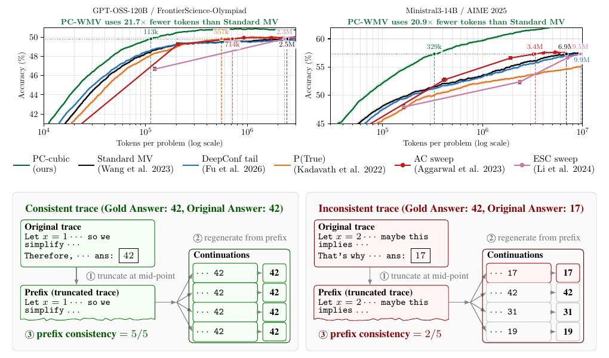
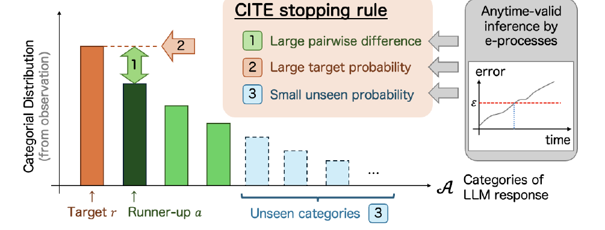
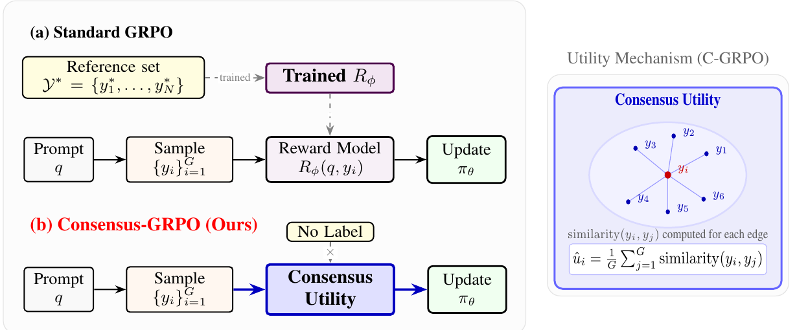
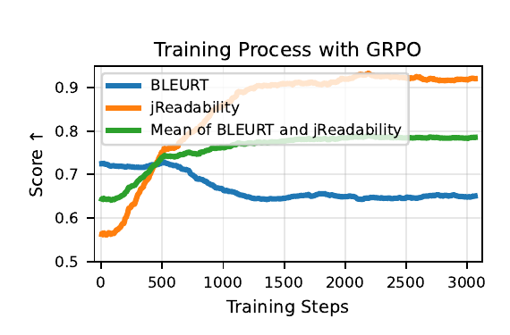
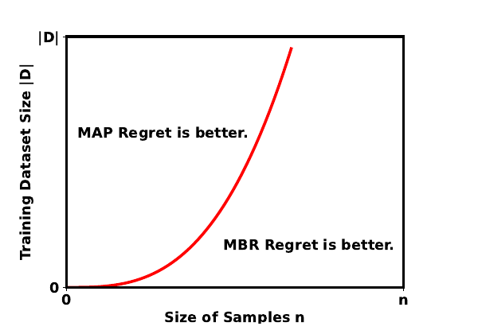
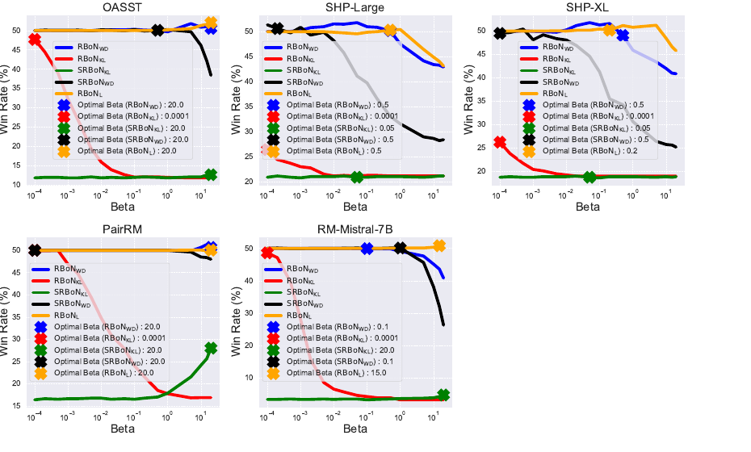
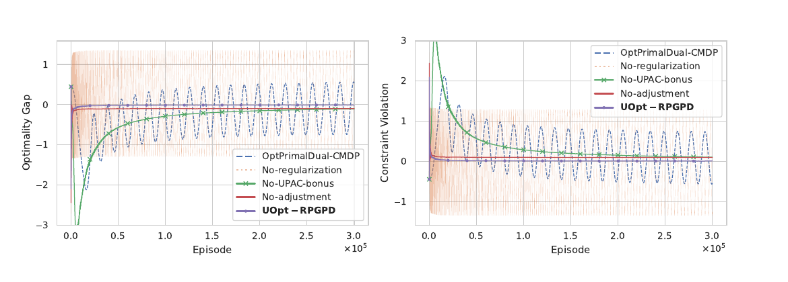

Reliable Decoding
I study Best-of-N and Minimum Bayes Risk decoding, including when these methods work, how quickly they converge, and how to make them robust to imperfect rewards.
Incoming Ph.D. student at MBZUAI
Starting in Aug 2026, I will join MBZUAI, supervised by Junpei Komiyama.
I study how to make language-model generation more reliable and efficient, from decoding algorithms and statistical guarantees to reinforcement-learning methods for multi-objective alignment.

My work connects decoding, statistical reliability, and reinforcement learning to build language models that optimize what we actually care about.
I study Best-of-N and Minimum Bayes Risk decoding, including when these methods work, how quickly they converge, and how to make them robust to imperfect rewards.
I develop reinforcement-learning methods that balance multiple rewards and constraints while reducing reward hacking and manual weight tuning.
I explore statistical signals and training objectives that make self-consistency and reasoning more reliable without unnecessary inference-time computation.
Prefix consistency estimates the reliability of a chain-of-thought by truncating it and checking whether regenerated continuations recover the same answer. Across reasoning models and benchmarks, it predicts correctness well and reaches standard majority-voting accuracy with substantially fewer tokens.

CITE provides anytime-valid statistical certification that a target response is the unique mode of an LLM's answer distribution. It controls false certification under adaptive stopping without assuming a fixed or known set of possible answers.

C-GRPO distills Minimum Bayes Risk decoding into GRPO training using only a utility function and policy-generated samples. It achieves performance comparable to MBR decoding in translation and summarization without its inference-time overhead.

MO-GRPO addresses reward hacking in multi-objective GRPO by automatically normalizing rewards according to their variance. It balances objectives without manual scale tuning and delivers more stable learning across control and text-generation tasks.

AW-GRPO automatically adjusts multiple reward weights according to each objective's learning progress. On advertising text generation and public benchmarks, it improves the balance among objectives while reducing constraint violations.

This work provides finite-sample guarantees showing that MBR decoding approaches the optimal solution at a rate of O(n−1/2) under stated assumptions. It also explains why MBR can converge faster than MAP decoding in several cases.

This work studies regularized Best-of-N sampling as robust optimization against errors in proxy rewards. It introduces Stochastic RBoN with theoretical guarantees and shows how simple regularizers can reduce reward hacking on alignment benchmarks.

This work proposes a policy-gradient primal-dual algorithm for online constrained MDPs with Uniform-PAC guarantees. It combines convergence to an optimal policy, sublinear regret, and polynomial sample complexity while controlling constraint violations.

Selected publication, service, and career updates.
I will join MBZUAI as a Ph.D. student, supervised by Junpei Komiyama.
MO-GRPO was accepted to TACL.
We released work on prefix consistency and anytime-valid inference with CITE.
We released C-GRPO, which distills consensus-based decoding into training.
AW-GRPO appeared at the EMNLP Industry Track.
Our work on theoretical guarantees for MBR decoding appeared at ACL.
Our evaluation of Best-of-N sampling strategies was published in TMLR.
MBZUAI, Ph.D. (incoming), supervised by Junpei Komiyama
Nara Institute of Science and Technology, Ph.D. program in Engineering (transferred to MBZUAI)
Nara Institute of Science and Technology, M.S. in Engineering
Tokyo University of Science, B.S. in Electrical Engineering
JST SPRING Fellowship, Doctoral fellowship
CyberAgent AI Lab, Research Intern
ATR, Research Assistant
AIST, Research Assistant
Reviewer, ARR; ICML (nominated as Gold Reviewer)
For research discussions or collaboration, email me at y.ichihara3406@gmail.com.